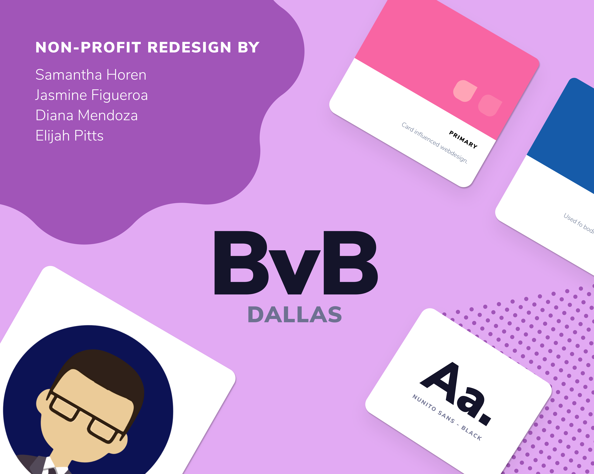
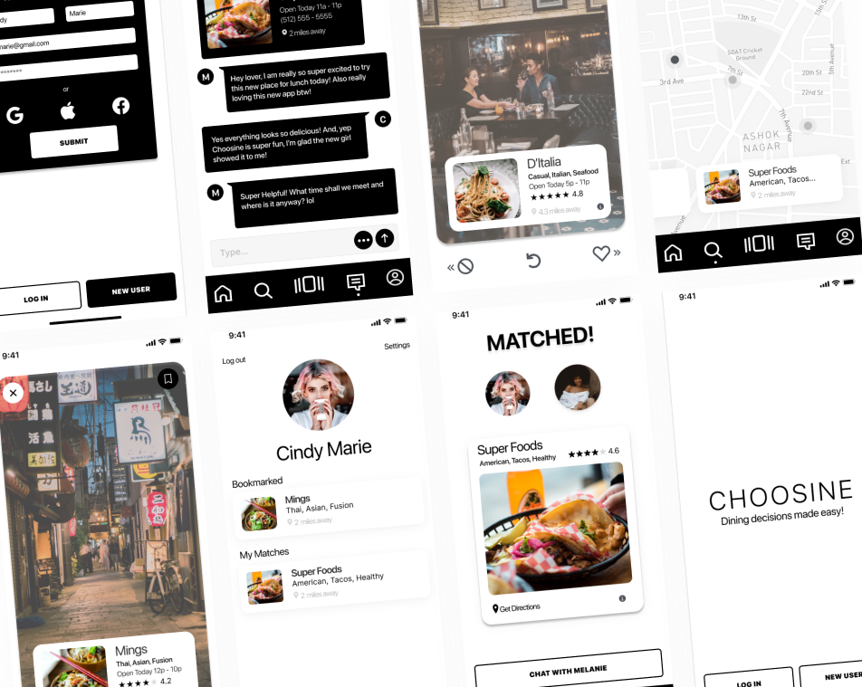

I am a recent graduate at UT Austin’s UX/UI Design Program. After a few years in Photography followed by
communication design, a new found love for UX/UI was brought to light.
While continuing education, I have toiled in everything from social media design & marketing,
to slinging drinks at a local bar. But all the while continuously creating & dreaming big.
My ambitions aim to open a new door into the arts and communication design world. To grow as a designer and overall artist.
To create designs through innovation that inspires people to live fearlessly, love deeply, and
appreciate this delicate beautiful earth.
SKILLS.
INFORMATION ARCHITECTURE
Strengths in structuring information through processes such as sitemapping and taxonnomy.
GRAPHIC DESIGN
Excellent in conveying ideas through typography, imagery, color and form with Adobe Illustrator.
PROTOTYPING WIREFRAMES
Skilled in sketching and prototyping designs and wireframes with InVision, Figma, and Adobe XD.
WORK.
VAYCAUTIOUS
A mobile app prototype
that lets users book their flights while simultaneously viewing Covid data for
airlines and destinations.
BvB DALLAS
A non profit website redesign that improves user
navigation comprehensiveness, simple ways to support, and overall aesthetics.


CHOOSINE
A mobile app prototype that eliminates the indecisiveness of where to eat with others by swiping and creating a preference profile.
BLUEBONNET COUNSELING
Capital Area Counseling website rebrand/redesign that improves visual design, site credability, and showcases afforable quality care.